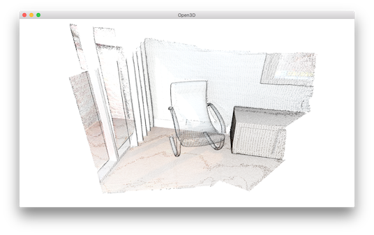
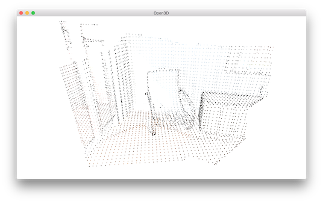

Point cloud¶
This tutorial demonstrates basic usage of a point cloud.
5 6 7 8 9 10 11 12 13 14 15 16 17 18 19 20 21 22 23 24 25 26 27 28 29 30 31 32 33 34 35 36 37 38 39 40 41 42 43 | # examples/Python/Basic/pointcloud.py
import numpy as np
import open3d as o3d
if __name__ == "__main__":
print("Load a ply point cloud, print it, and render it")
pcd = o3d.io.read_point_cloud("../../TestData/fragment.ply")
print(pcd)
print(np.asarray(pcd.points))
o3d.visualization.draw_geometries([pcd])
print("Downsample the point cloud with a voxel of 0.05")
downpcd = pcd.voxel_down_sample(voxel_size=0.05)
o3d.visualization.draw_geometries([downpcd])
print("Recompute the normal of the downsampled point cloud")
downpcd.estimate_normals(search_param=o3d.geometry.KDTreeSearchParamHybrid(
radius=0.1, max_nn=30))
o3d.visualization.draw_geometries([downpcd])
print("Print a normal vector of the 0th point")
print(downpcd.normals[0])
print("Print the normal vectors of the first 10 points")
print(np.asarray(downpcd.normals)[:10, :])
print("")
print("Load a polygon volume and use it to crop the original point cloud")
vol = o3d.visualization.read_selection_polygon_volume(
"../../TestData/Crop/cropped.json")
chair = vol.crop_point_cloud(pcd)
o3d.visualization.draw_geometries([chair])
print("")
print("Paint chair")
chair.paint_uniform_color([1, 0.706, 0])
o3d.visualization.draw_geometries([chair])
print("")
|
Visualize point cloud¶
The first part of the tutorial reads a point cloud and visualizes it.
12 13 14 15 16 | print("Load a ply point cloud, print it, and render it")
pcd = o3d.io.read_point_cloud("../../TestData/fragment.ply")
print(pcd)
print(np.asarray(pcd.points))
o3d.visualization.draw_geometries([pcd])
|
read_point_cloud reads a point cloud from a file. It tries to decode the file based on the extension name. The supported extension names are: pcd, ply, xyz, xyzrgb, xyzn, pts.
draw_geometries visualizes the point cloud.
Use mouse/trackpad to see the geometry from different view point.
{kind=link}
It looks like a dense surface, but it is actually a point cloud rendered as surfels. The GUI supports various keyboard functions. One of them, the - key reduces the size of the points (surfels). Press it multiple times, the visualization becomes:
{kind=link}
Note
Press h key to print out a complete list of keyboard instructions for the GUI. For more information of the visualization GUI, refer to Visualization and Customized visualization.
Note
On OS X, the GUI window may not receive keyboard event. In this case, try to launch Python with pythonw instead of python.
Voxel downsampling¶
Voxel downsampling uses a regular voxel grid to create a uniformly downsampled point cloud from an input point cloud. It is often used as a pre-processing step for many point cloud processing tasks. The algorithm operates in two steps:
Points are bucketed into voxels.
Each occupied voxel generates exact one point by averaging all points inside.
18 19 20 | print("Downsample the point cloud with a voxel of 0.05")
downpcd = pcd.voxel_down_sample(voxel_size=0.05)
o3d.visualization.draw_geometries([downpcd])
|
This is the downsampled point cloud:
{kind=link}
Vertex normal estimation¶
Another basic operation for point cloud is point normal estimation.
22 23 24 25 | print("Recompute the normal of the downsampled point cloud")
downpcd.estimate_normals(search_param=o3d.geometry.KDTreeSearchParamHybrid(
radius=0.1, max_nn=30))
o3d.visualization.draw_geometries([downpcd])
|
estimate_normals computes normal for every point. The function finds adjacent points and calculate the principal axis of the adjacent points using covariance analysis.
The function takes an instance of KDTreeSearchParamHybrid class as an argument. The two key arguments radius = 0.1 and max_nn = 30 specifies search radius and maximum nearest neighbor. It has 10cm of search radius, and only considers up to 30 neighbors to save computation time.
Note
The covariance analysis algorithm produces two opposite directions as normal candidates. Without knowing the global structure of the geometry, both can be correct. This is known as the normal orientation problem. Open3D tries to orient the normal to align with the original normal if it exists. Otherwise, Open3D does a random guess. Further orientation functions such as orient_normals_to_align_with_direction and orient_normals_towards_camera_location need to be called if the orientation is a concern.
Use draw_geometries to visualize the point cloud and press n to see point normal. Key - and key + can be used to control the length of the normal.
{kind=link}
Access estimated vertex normal¶
Estimated normal vectors can be retrieved by normals variable of downpcd.
29 30 | print("Print a normal vector of the 0th point")
print(downpcd.normals[0])
|
Print a normal vector of 0th point
[-0.27566603 -0.89197839 -0.35830543]
To check out other variables, please use help(downpcd).
Normal vectors can be transformed as a numpy array using np.asarray.
31 32 | print("Print the normal vectors of the first 10 points")
print(np.asarray(downpcd.normals)[:10, :])
|
Print the first 100 normal vectors
[[-0.27566603 -0.89197839 -0.35830543]
[-0.00694405 -0.99478075 -0.10179902]
[-0.00399871 -0.99965423 -0.02598917]
[-0.46344316 -0.68643798 -0.56037785]
[-0.43476205 -0.62438493 -0.64894177]
[-0.51440078 -0.56093481 -0.6486478 ]
[-0.27498453 -0.67317361 -0.68645524]
[-0.00327304 -0.99977409 -0.02100143]
[-0.01464332 -0.99960281 -0.02407874]]
Check Working with NumPy for more examples regarding numpy array.
Crop point cloud¶
35 36 37 38 39 40 | print("Load a polygon volume and use it to crop the original point cloud")
vol = o3d.visualization.read_selection_polygon_volume(
"../../TestData/Crop/cropped.json")
chair = vol.crop_point_cloud(pcd)
o3d.visualization.draw_geometries([chair])
print("")
|
read_selection_polygon_volume reads a json file that specifies polygon selection area.
vol.crop_point_cloud(pcd) filters out points. Only the chair remains.
{kind=link}
{kind=link}